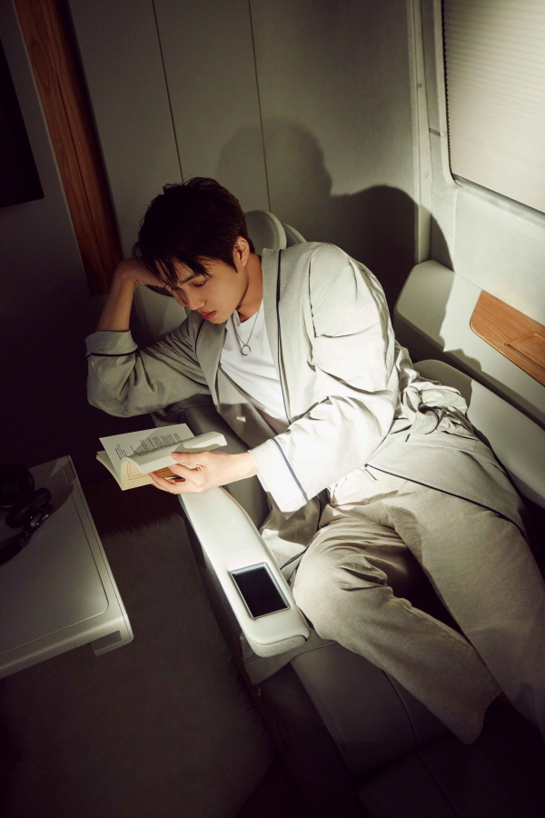

 현대자동차의 쏠라티가 SM엔터테인먼트 아티스트들을 위해 편안하고 고급스러운 공간으로 변신했다. 현대차는 SM엔터테인먼트와 함께 진행하는 ‘현대 X SM 무빙 프로젝트’의 일환으로 제작된 ‘쏠라티 무빙 호텔’을 21일 공개했다. 이번 프로젝트는 이동수단으로만 여겨지던 자동차의 역할을 삶의 다양한 영역으로 확대한다는 취지로 시작했다. 지난해 선보인 ‘쏠라티 무빙 스튜디오’에 이은 두 번째 협업 프로젝트 결과물이다. 쏠라티 무빙 호텔은 쏠라티 리무진을 기반으로 디자인된 커스터마이징 차량으로 공연이나 촬영을 위해 이동 차량 안에서 긴 시간을 보내야 하는 가수, 배우 등 아티스트들을 위해 새로운 개념의 이동공간을 제시하기 위해 기획됐다.
현대자동차의 쏠라티가 SM엔터테인먼트 아티스트들을 위해 편안하고 고급스러운 공간으로 변신했다. 현대차는 SM엔터테인먼트와 함께 진행하는 ‘현대 X SM 무빙 프로젝트’의 일환으로 제작된 ‘쏠라티 무빙 호텔’을 21일 공개했다. 이번 프로젝트는 이동수단으로만 여겨지던 자동차의 역할을 삶의 다양한 영역으로 확대한다는 취지로 시작했다. 지난해 선보인 ‘쏠라티 무빙 스튜디오’에 이은 두 번째 협업 프로젝트 결과물이다. 쏠라티 무빙 호텔은 쏠라티 리무진을 기반으로 디자인된 커스터마이징 차량으로 공연이나 촬영을 위해 이동 차량 안에서 긴 시간을 보내야 하는 가수, 배우 등 아티스트들을 위해 새로운 개념의 이동공간을 제시하기 위해 기획됐다. 특히 차량 이용자에게 ‘모던 럭셔리 라이프스타일’을 제시하고 차량 내 환경을 내 집, 내 방과 같이 편안한 공간으로 느낄 수 있도록 내추럴 오크 컬러의 바닥재, 그레이 계열의 나파 천연가죽을 사용한 시트 등을 적용해 ‘스칸디나비안 무드’의 실내공간을 완성했다. 기획 단계부터 ‘쏠라티 무빙 호텔’을 직접 사용하게 될 SM 소속 아티스트들을 대상으로 심도 깊은 인터뷰를 진행해 이동 차량 안에서 겪는 다양한 상황들과 니즈를 구체적으로 파악해 차량의 디자인에 적용했다. 안락한 승차감, 고급스럽고 넉넉한 실내공간 등 쏠라티의 강점을 살리면서 차량 안에서 헤어, 메이크업, 대본 준비, 식사, 휴식 등 다양한 일들을 해결해야 하는 아티스트를 위해 쏠라티는 휴식과 변신에 최적화된 공간으로 재탄생했다. 아티스트들이 탑승하는 좌석은 165도로 눕혀져 차량 안에서도 마치 침대에 누운 것처럼 편안한 휴식을 취할 수 있고, 좌석을 90도로 회전시켜 책상에 앉은 것처럼 대본, 악보 등을 볼 수도 있다. 차량 내 조명 역시 색깔과 조도를 자유롭게 조정할 수 있어 긴 이동시간 중 탑승자들에게 최적화된 실내공간을 제공한다. 탑승 공간 앞부분에는 메이크업 도구, 탈착이 가능한 거울, 컬러 밸런스 조절이 가능한 메이크업 전문 조명이 설치돼 차량 안에서도 완벽하게 헤어 및 메이크업을 준비할 수 있다. 탑승 공간 뒷부분에는 의상 및 신발을 보관할 수 있는 옷장과 스타일링을 마무리할 수 있는 준비 공간이 마련됐다. 이외에도 미니 냉장고를 탑재해 이동 중에도 간단한 다과를 즐길 수 있게 하는 등 아티스트들의 바쁜 스케줄에 최적화된 공간으로 디자인됐다. 쏠라티 무빙 호텔은 상반기 중 SM 측에 전달돼 지난해 제작된 ‘쏠라티 무빙 스튜디오’와 함께 SM 소속 아티스트들의 스케줄 이동과 각종 활동에 이용되며, SM 소속 그룹 엑소(EXO)의 카이, 배우 이연희가 등장하는 쏠라티 무빙 호텔 패션화보는 이달 말 공개될 예정이다.